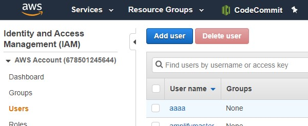
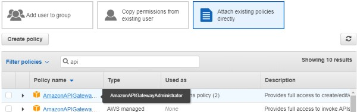
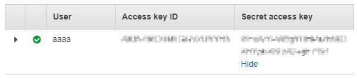

AWS API Gateway Path Replacer GUI
Preparing IAM user
-
Login to the AWS console and open IAM console.
-
Select Users on left pain and click "Add user" button.

-
Input User name you want.
Access type: Choose(check) "Programmatic access".
Then click "Next: Permissions" button beneath.
-
Select "Attach existing policies directly".
And choice "AmazonAPIGatewayAdministrator".
Then click "Next: Tags" button beneath.

-
Click "Next: Review" button beneath and "Create User".
-
Copy Access key ID and Secret access key.
